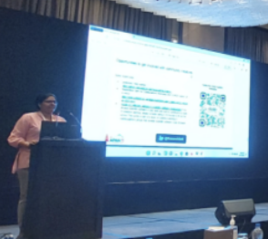
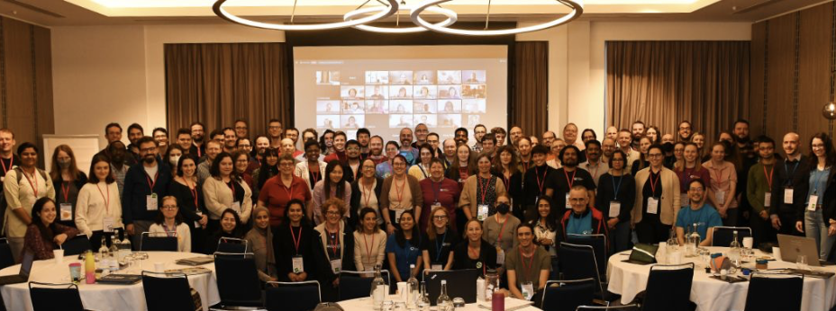
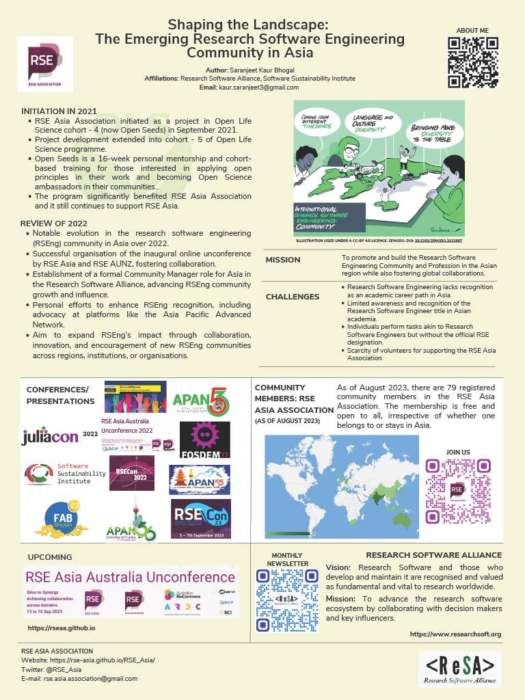

Advocating for Research Software Engineering in Asia: 2023 in Review
Originally posted on Research Software Alliance’s blog.
In 2023 I was engaged by the Research Software Alliance (ReSA) as a Research Community Manager for the Asia region, as part of the ReSA mission to advance the research software ecosystem by collaborating with decision makers and key influencers. This part-time role has provided a platform to promote awareness about research software engineering and foster meaningful connections across Asia and globally, which are detailed in this blog post.
Global estimates of the number of research software engineers (RSEs) total more than 300,000 people (Hettrick, 2022), and recent predictions suggest that at least 50 countries will have RSE associations by 2030 (Katz & Hettrick, 2023 (and preprint)). The RSE Asia Association currently serves RSEs across Asia and hosts monthly Community Calls. These calls are free and open to anyone with an interest in research software engineering and have served as a valuable forum for knowledge sharing and collaboration.
There are significant challenges to engaging the research software community in Asia, including limited awareness and recognition of the RSE title in academia, although many individuals perform tasks akin to RSEs. Consequently, much of my focus this year has been on engaging in community events in Asia to promote awareness of ReSA and the RSE movement. This has included both events in Asia and globally to increase international cross-fertilisation.
Engaging with Asian communities
APAN55 in Nepal: In March I presented a session on “Research Software Engineering (RSE) Asia Association: Journey and Future Plans” at the 55th meeting of the Asia Pacific Advanced Network (APAN) in Kathmandu, Nepal, as an APAN Fellow. APAN’s emerging engagement with RSE topics led to a ReSA blog post on the potential role of National Research and Education Networks (NRENs) in promoting the growth of an RSE community in the Asia-Pacific. The significance of this lies in that NRENs have not traditionally been significantly involved in supporting RSEs in other regions. I have shared my experience of attending APAN55 in the blogpost “Attending an in-person Asia Pacific Advanced Network (APAN) meeting for the first time”.

Malaysia’s Leap in Open Science: In May 2023, I attended the online launch ceremony of the Malaysian Open Science Platform. The UNESCO Recommendation on Open Science includes open software as a key element of open science; this implies that in the future, research software might also become a focus in Malaysia. The details of this event are shared in my blog post “Witnessing the launch ceremony of the Malaysia Open Science Platform (MOSP)”.
Designing Resilient Futures in Bhutan: The FAB23 Conference was hosted in Jigme Namgyel Wangchuck Super FabLab, Thimphu, Bhutan, in July 2023, with the theme of “designing resilient futures”. The Fab Labs share the goal of democratising access to the tools for technical invention through community-based labs and advanced research centres. The conference provided me with an opportunity to connect with the Fab and Maker community and understand how research software could help play a vital role in this community. At this conference, I presented a talk on “Making research software reproducible and sustainable”.
APAN56 in Sri Lanka: In August 2023, I attended the 56th meeting of the Asia Pacific Advanced Network in Colombo, Sri Lanka as an APAN Fellow. The networking and knowledge sharing that took place were invaluable, reinforcing the importance of collaboration with the APAN community. At this meeting, I presented a talk on “Navigating the RSE Community Landscape in Asia”.
Cross-fertilisation between Asia and global initiatives
CW23 in Manchester, UK: In May I attended the Collaborations Workshop 2023 in Manchester, UK, as an International Fellow of the Software Sustainability Institute. It was a melting pot of ideas and a convergence of brilliant minds. At this workshop, I also met and interacted with RSEs from different parts of the globe.
During the Hack Day of this workshop, our team co-created a set of definitions, guidelines, and criteria to distinguish authors from non-author contributors to a software project. Our output, "SORTÆD: Software Role Taxonomy and Authorship Definition" laid the groundwork for a ReSA task force to discuss issues in the context of a software project such as the difference between a contributor and an author, when a contributor becomes an author, and when an author stops being an author.

RSECon23 in Swansea, UK: In September 2023, the learning and sharing continued. I participated in the R Project Sprint at the University of Warwick, UK, and went on to attend and volunteer at RSECon23 in Swansea. At RSECon23, I had the opportunity to present a lightning talk and a poster titled "Shaping the Landscape: The Emerging Research Software Engineering Community in Asia." Additionally, I provided updates from the Asia region during the RSE Worldwide session.


Fostering Collaboration: RSE Asia Australia Unconference: Later in September 2023, I co-organised the second online RSE Asia Australia Unconference with the RSE Association of Australia and New Zealand. The theme for this year was “Silos to Synergy - Achieving collaboration across domains”. Being an unconference, the event was participant led and included many discussions about the RSE community. The details of the unconference can be found in the summary report of the RSE Asia Australia Unconference 2023.
Conclusion
As I look back on this year, I am filled with gratitude for the opportunities I’ve had and the incredible individuals I've had the privilege to meet. The journey of increasing awareness about RSE in Asia is an enriching one, and there is a lot of potential for growth and collaboration in the years to come. To become a community member of the RSE Asia Association, please fill the membership form. The community membership of the RSE Asia Association is free and open to all. People from all regions of the globe are welcome to join our community, irrespective of whether they belong to or are located in Asia.
Acknowledgements
This project has been made possible in part by a grant from The Chan Zuckerberg Initiative DAF, an advised fund of Silicon Valley Community Foundation.